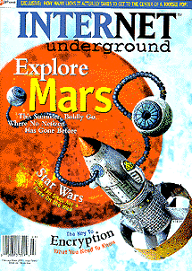

 volume 2, issue 3
February-March 1997 electric paper
Cover Story:
Life on Mars
by Richard Thieme
Scheduled for a July landing, NASA's Martian rover Sojourner will become a mobile outpost for the Internet.
Also Featuring:
Cryptography from A to Z
by Declan McCullagh
The epic struggle between codemakers and codebreakers.
IRC Games
by Mitchell Lavnick
Text-based IRC games like #RiskyBus and #ACRO may not look glossy, but don't be fooled--they are addictively entertaining.
The Best of Inventions
by Steve Knopper
Inspired inventors come up with the 1 percent inspiration and let the Net take care of the 99 percent perspiration.
Mutiny on the Bounty: The WAREZ Wars
by Anthony Castranda
Could software piracy be the organized crime of the 21st century? The inner workings of the warez community.
Return of the Jedi
by Alex Gordon
With the special editions and new prequels coming out, Star Wars fandom reaches a fever pitch on the Net.
On the Net with...John Perry Barlow
by Todd Brendan Fahey
EFF cofounder John Perry Barlow gives IU the story from the frontlines of the ongoing fighting for cyber-rights.
FAQ: Notes from the Underground
by Sarah Ellerman
A conversation with Jim Thomas, moderator of Computer Underground Digest.
Plus: